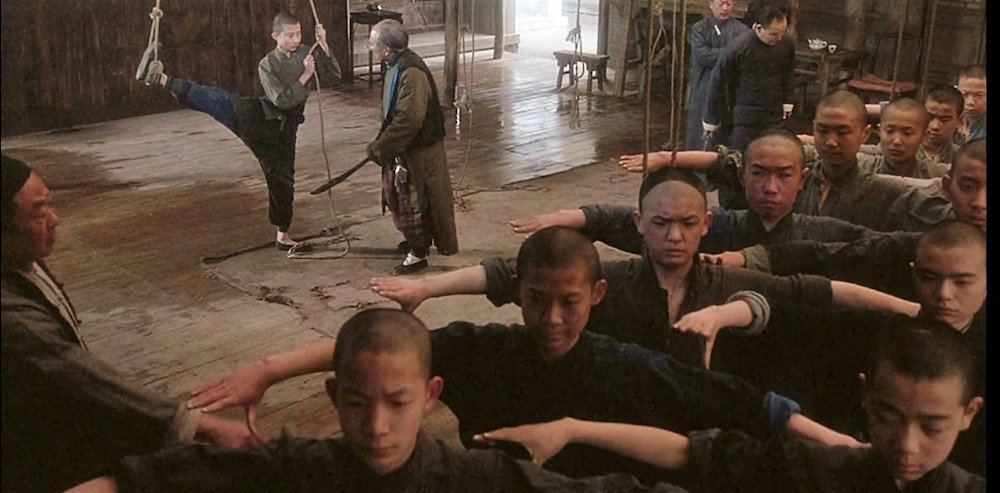
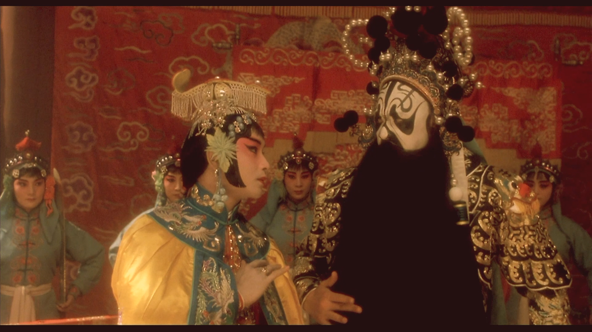
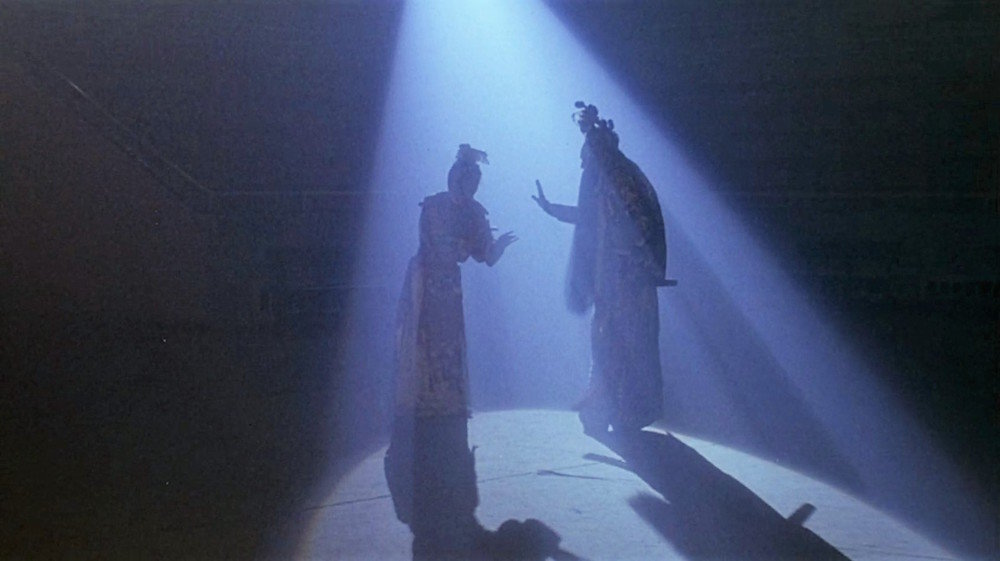

In the winter of 1925, the prostitute leaves her son, Douzi, at the prestigious Peking Opera Academy. At this time, when he is rejected by six fingers, the mother cuts off the child's finger without hesitation. The beginning of the story and the first loss is the fundamental pain of the Douzi. He is trained with Shitou for the roles of Yu and King of Chu. During this period, he continued to change the lyrics of 'I am originally a girl, not a boy (我本来是个丫头，不是男孩子)', to 'I am originally a boy, not a girl' repeatedly and being punished. Finally, he accepts himself as an actor and sings with the original lyrics. This can be seen as the second loss of letting go of oneself.
Boys training in the Guan Jifa's Peking Opera Academy
The scene changes and in 1937, Duan Xiaolou(Shitou) and Cheng Dieyi(Douzi) become famous actors, but after some time Xiaolou married Juxian and Dieyi says their partnership is over. Nevertheless, when Xiaolou is captured by the Japanese, Dieyi rescues him in exchange for performing in front of them, but are rebuked for abusing the art. After that, Dieyi becomes addicted to opium. 
Xiaolou and Dieyi Playing Opera, Farewell My Concubine
Meanwhile, while training at the Academy as Douzi and Shitou, Douzi takes an abandoned newborn baby and gives him the name Xiao Si. However, after growing up, Xiao Si takes the role of Yu from Dieyi, and during the Cultural Revolution, he leads the Red Guard to interrogate his saviors - Dieyi and Xialou. The purpose of the Red Guard is to overthrow the old culture, and the actors of Peking Opera are dragged and criticized by the crowd as representatives of the old culture. Then Xiaolou reveals that Dieyi is gay and that his wife, Juxian, was a prostitute and has never been in love. At this point, the conflict in the film reaches its climax. Because of this, Juxian commits suicide in a wedding clothes. After the Cultural Revolution in 1977, Dieyi and Xiaolou go back to the first scene where they play the Farewell My Concubine on stage, and Dieyi pulls out the sword of the King and commits suicide.
Last Performance of Dieyi
Farewell My Cuncubine, Interviews and behind-the-scenes of actors and directors. Through this, you can know the characters that the actor understands.
Based primarily on the main character Dieyi, the film focuses on two main themes: Peking Opera and homosexuality.
image cited: https://mubi.com/notebook/posts/close-up-on-farewell-my-concubine-a-spectacular-ode-to-life-love-and-art